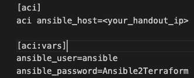

Module 2¶
Outline¶
In this module, you'll manually translate the same playbook you worked on in Module 1. This step is crucial as it helps you understand the behind-the-scenes processes. Additionally, it allows you to choose your preferred method for future translations: using the translator application or following the manual process.
The Module2 directory contains the following files and directories:
Module2/ ├── ansible_to_TF.yml ├── filter_plugins/ ├── go.mod ├── go.sum ├── inventory.networking └── my_ACI_playbook.yml
You will be working with and modifying my_ACI_playbook.yml and the inventory.networking. The remaining files in the directory are necessary for the translation process to be carried out.
Instructions¶
1. Please Close All Terminal Windows from Module 1¶
2. Open and Modify the inventory.networking File¶
Navigate to the workshop/DEVWKS-2302/Module2 directory and open the inventory.networking file.
Referring to your handout, fill the empty fields in the inventory.networking file. Enter the required information directly after the '=' sign without adding any space. Put the APIC Host (this is the APIC's IP address) for ansible_host=, the APIC User ID for ansible_user=, and the APIC Password for ansible_password=.
Example:
Leave the rest of the fields unchanged. Once you have entered the required information, you can save your changes and close the file.
3. Open and Modify the Playbook my_ACI_playbook.yml¶
In the same directory as before, open the playbook file named my_ACI_playbook.yml.
This playbook contains a total of seven tasks.
Each task in your playbook needs to be modified to include the register keyword, followed by a unique identifier. This unique identifier allows each task to store its own individual output. It's crucial that every task has its own unique identifier, to prevent any mix-up of output data between tasks. After you've completed step 4, for your convenience, you can replace your entire my_ACI_playbook.yml file with the playbook provided below. This pre-prepared playbook already includes the register keyword and unique identifiers for each task.
As a next step, the playbook named ansible_to_TF.yml should be included as the final task in your playbook. This ensures that it executes only after all the other tasks have been completed. In our current context, this will be the eighth task in the playbook. For your convenience, the eighth task provided in the playbook below is already set as ansible_to_TF.yml.
--- - name: my_ACI_playbook hosts: aci gather_facts: no tasks: - name: Create a tenant cisco.aci.aci_tenant: tenant: ansible_to_tf output_level: debug state: present register: reg1 - name: Configure a VRF cisco.aci.aci_vrf: tenant: ansible_to_tf vrf: l3outtest output_level: debug state: present register: reg2 - name: Create an L3Out cisco.aci.aci_l3out: tenant: ansible_to_tf l3out: l3-dmz-ex-1 domain: l3outtest vrf: l3outtest route_control: export output_level: debug state: present register: reg3 - name: Create a node profile cisco.aci.aci_l3out_logical_node_profile: tenant: ansible_to_tf l3out: l3-dmz-ex-1 logical_node: np1101 output_level: debug state: present register: reg4 - name: Add a node cisco.aci.aci_l3out_logical_node: tenant: ansible_to_tf l3out: l3-dmz-ex-1 logical_node: np1101 pod_id: 1 node_id: 1101 router_id: 111.111.111.111 output_level: debug state: present register: reg5 - name: Create a static route cisco.aci.aci_l3out_static_routes: tenant: ansible_to_tf pod_id: 1 node_id: 1101 prefix: 192.168.8.0/24 l3out: l3-dmz-ex-1 logical_node: np1101 output_level: debug state: present register: reg6 - name: Add a next hop cisco.aci.aci_l3out_static_routes_nexthop: tenant: ansible_to_tf l3out: l3-dmz-ex-1 logical_node: np1101 node_id: 1101 pod_id: 1 prefix: 192.168.8.0/24 nexthop: 192.168.181.99 output_level: debug state: present register: reg7 - name: Include tasks to convert the play to TF config ansible.builtin.include_tasks: file: ansible_to_TF.yml
It's crucial to add the register keyword followed by a unique identifier to all the tasks in the playbook. This is because the data stored in register will be parsed and used as input for the Terraform import function during the translation process.
It's essential to include the ansible_to_TF.yml file in the playbook. This file contains the tasks that perform the translation process. By including this file, you ensure that its tasks are executed after the main playbook tasks. This sequence is important because the translation tasks in ansible_to_TF.yml rely on the data generated by the main playbook tasks, which is stored using the register keyword. Without including ansible_to_TF.yml, the translation tasks wouldn't be executed, and the translation process wouldn't take place.
After pasting the code into your my_ACI_playbook.yml file, please personalize your tenant name. Replace ansible_to_tf with your first name in the Create a tenant task. This ensures your configurations won't conflict with others and helps you easily identify your resources. After making this change, save and close the file.
- name: Create a tenant cisco.aci.aci_tenant: tenant: <your_first_name> # Replace <your_first_name> with your actual first name output_level: debug state: present register: reg1
4. Starting the Translation by Running Our Playbook¶
Please use the keys Ctrl-Alt-T on your keyboard to open a terminal window or open it using the terminal icon on your desktop.
Navigate to the workshop/DEVWKS-2302/Module2 directory in your terminal by using the following command:
cd workshop/DEVWKS-2302/Module2
Run the playbook using the ansible-playbook command followed by the playbook name and the inventory file. The -i option specifies the inventory file. Here is the command:
ansible-playbook my_ACI_playbook.yml -i inventory.networking -vvv
Press Enter to start the execution. Ansible will now run your modified playbook using the specified inventory.
Wait for the run to complete.
5. The Translated Terraform Files¶
Navigate to your Module2 folder and you will see that a number of files of different formats were generated.
Locate the my_ACI_playbook folder.
As in Module 1, you will find the translated Terraform files in it.
6. Modifying an ACI Tenant Annotation Using Terraform Commands¶
Open a new terminal window using the Ctrl-Alt-T shortcut on your keyboard or by clicking on the terminal icon on your desktop.
Navigate to the workshop/DEVWKS-2302/Module2/my_ACI_playbook directory using the cd command:
cd workshop/DEVWKS-2302/Module2/my_ACI_playbook
Run the following command to initialize Terraform in your working directory:
terraform initOpen the Terraform configuration file named resources.tf. Locate the resource block for "aci_tenant" "translated_tenant_ansible_to_tf" and find the annotation attribute. It should look like this:
resource "aci_tenant" "translated_tenant_ansible_to_tf" { annotation = "orchestrator:ansible" description = null name = "ansible_to_tf" name_alias = null relation_fv_rs_tenant_mon_pol = null relation_fv_rs_tn_deny_rule = null }
Open your APIC URL in a web browser and sign back in using the credentials provided in the handout if you are logged out.
Navigate to the ansible_to_tf tenant under the Tenants section. Check for the attached Ansible label. This label corresponds to the annotation value "orchestrator:ansible" in your Terraform file.
Next, in the resource "aci_tenant" "translated_tenant_ansible_to_tf" block, change the annotation value to "orchestrator:terraform" in your Terraform file as seen below:
resource "aci_tenant" "translated_tenant_ansible_to_tf" { annotation = "orchestrator:terraform" description = null name = "ansible_to_tf" name_alias = null relation_fv_rs_tenant_mon_pol = null relation_fv_rs_tn_deny_rule = null }
Verify your changes by running the terraform plan command.
terraform planYou'll see that the annotation will be updated from "orchestrator:ansible" to "orchestrator:terraform" for the "aci_tenant" "translated_tenant_ansible_to_tf" resource.
To apply these changes to your actual infrastructure, run the terraform apply command:
terraform apply
Finally, return to the APIC in your browser and navigate to the ansible_to_tf tenant. The Terraform label should now be attached to the Tenant, indicating a successful update of the annotation value.